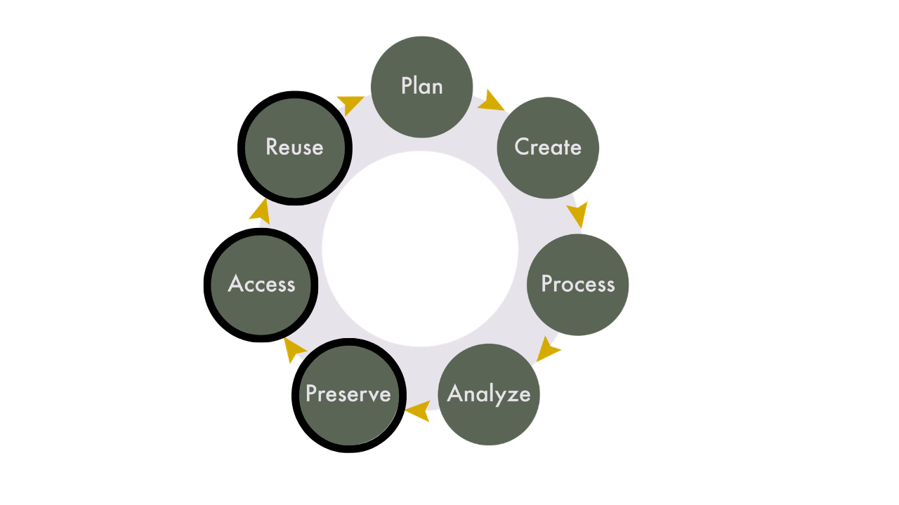
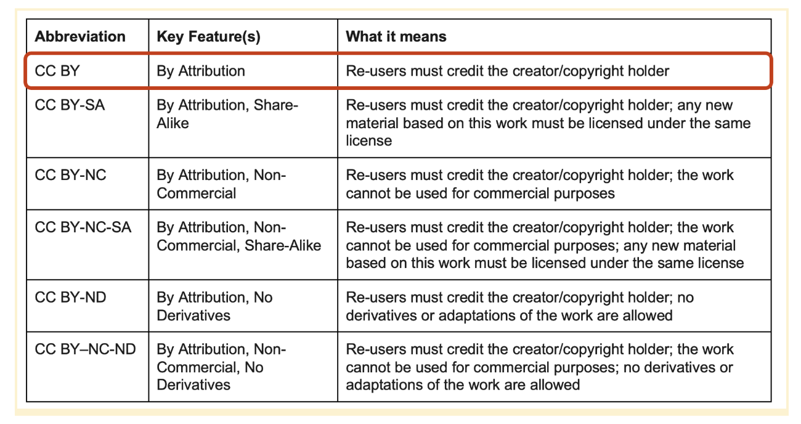

Lesson 2: Data sharing
Learning Objectives
By the end of this session, you’ll be able to:
- Articulate reasons to share and preserve research data.
- Make decisions about what data and materials to share and keep after a project’s completion.
- Define data repositories and their purpose.
- Discuss qualities of good data repositories and how to choose one for your project.
- Describe data license types and the main considerations when choosing a license for your project.
- Deposit data into the Borealis data repository.
Lecture - Data Sharing
We’ve spent a lot of time in this course talking about documentation and its importance for data sharing and reproducibility. In this session, we’re going to learn how to preserve data so it can be accessed and reused, which is part of the research data life cycle that we looked at on day one.

What to Keep for Yourself
In addition to the data and files that you will share with others, you also want to consider which project files you should keep for yourself. Just because you’re not sharing something doesn’t mean you should get rid of it. It is common for institutions to have rules for how long you have to keep research records after a project is complete. Research ethics boards don’t require you to destroy data, but if participants are told that their data will be destroyed, it must be. While it is not possible to predict all the files you will generate prior to beginning a project, considering these elements at the project’s onset, and through a DMP, can help ensure that your research files will be in good shape at the end of your project to enable your desired workflows.
Files you will want to consider saving for yourself include:
- Project management records: internal communications, decision making documents, admin records, ethics information, etc.
- Data management plans, methodologies, standard operated procedures.
- Unused analyses, visualizations, code chunks.
- Intermediate files.
You will also want to make sure that everybody involved with the project agrees on what data/files will be shared (if any), and how/where this will happen. This can include:
- Your supervisor
- Partners/collaborators/communities you’re working with
- Research participants
Data Repositories
There are different ways that data can be shared. Some researchers will keep their files on a local storage system, and through the addition of a data availability statement in their research papers, others can contact them and request access to the data. Another option is to host the data on a website that is maintained by those involved with the research project. While both of these methods for sharing data do work, they require ongoing work and maintenance, which can be a burden and result in unintended barriers to data access.
Data repositories are systems that facilitate the upload, long-term preservation, discovery, and access of research data and accompanying materials. The focus of data repositories is on housing data after a project’s completion - data that won’t be changed or updated on a regular basis. These systems remove the perpetual maintenance and work by researchers in keeping their data safe and organized, and are a best practice for sharing data.
Data repositories provide:
- persistent identifiers (e.g. DOIs),
- options for controlled vocabulary and custom metadata,
- version control,
- access permissions on both public and administrative sides of the interface.
Persistent identifiers make datasets citable as research outputs. Metadata enables search and discovery. Versioning ensures research remains traceable over time. And, access permissions help research teams control who can edit or view the data.
Data repositories do not always guarantee long-term storage and preservation, nor are they always appropriate for sensitive data. Your choice of repository will depend on the unique needs of your project, the structure and size of your data, and the ethical, legal, or cultural aspects of the data you want to deposit.
Repositories generally fall into three categories:
- Disciplinary: these are focused on specific research communities, such as genomics, demography, or archaeology. For example, GEO, ICPSR, and the Archaeology Data Service.
- Generalist: these accept data from multiple disciplines and support multiple file types. For example, Zenodo and Figshare. The Federated Research Data Repository is a Canadian generalist repository that specializes in big data deposits.
- Institutional: these are hosted by universities or governments. For example, Borealis is a Canadian institutional data repository.
Choosing a Repository
The following questions can be used to guide your decision in choosing a data repository:
- Does it assign DOIs?
- Does it support metadata standards?
- Is there institutional support?
- What are file size limits?
- Does it allow restricted access?
- Is it sustainable long-term?
- Is it indexed by discovery services?
Borealis
Borealis is a national data repository service coordinated by the Digital Research Alliance of Canada. It is built on Dataverse, an open-source repository infrastructure originally developed at Harvard. It is used by over 70 institutions in Canada, and will be the repository that we will be using for this program.
Benefits of Borealis include:
- Servers are hosted in Canada.
- Has a robust preservation plan (https://borealisdata.ca/preservationplan/).
- Provides a persistent digital object identifier (DOI) for all datasets.
- Metadata are harvested by a number of aggregation services, e.g., Lunaris(https://www.lunaris.ca/en), Google Dataset Search(https://datasetsearch.research.google.com/.)
- Metrics available for how often datasets/files have been downloaded.
If your institution uses Borealis, there will likely be local support available to you. This support is going to be different across institutions, with some institutions providing robust support for submissions, some providing a review of submitted datasets, and others allowing data to be directly deposited by researchers.
While Borealis is generally a good choice for most research projects, there are some drawbacks that can make it unsuitable for certain projects. While many institutions in Canada use Borealis, it requires a subscription and a certain level of staffing, and not all institutions are able to support it. There is also a maximum file size of 5GB, so larger datasets cannot be uploaded to the system. If your institution doesn’t support Borealis, or if you are working with larger data, FRDR (mentioned above) is a good choice as a generalist Canadian repository.
For more details about Borealis, you can contact your institution, or follow the documentation on their website: https://learn.scholarsportal.info/all-guides/borealis/
Data Licenses
When you share data, you should carefully consider the license and what it will allow people to do with it (or not do with it). As with all aspects of data sharing, these are considerations you will need to communicate with your research team and research participants, and ideally have outlined in your DMP.
Creative Commons licenses
Creative Commons licenses are a common way to licence data, as it provides a structured way for users to dictate and understand what they are able to do with the data. Borealis and some other data repositories have Creative Commons licenses built into the platform, which allows for the easy application of the license. You must be the copyright holder in order to apply a Creative Commons license, and once a license has been set you can’t revoke it, so pick wisely!
Below are the types of Creative Commons licenses available, and if you have questions about how to choose a license, they have created a tool to help you work through the decision process: https://creativecommons.org/chooser/
